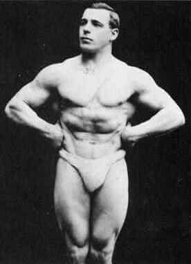
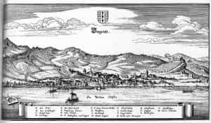
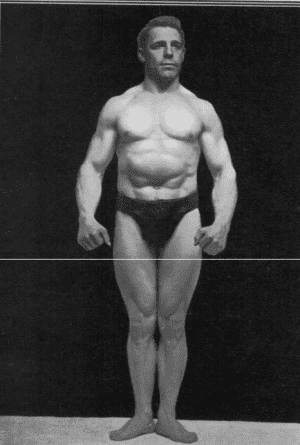
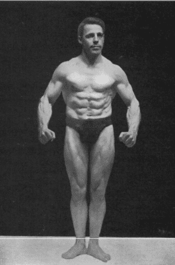

< < < Back
How To Control Your Muscles – Return Of Kings
Yes, my dear readers, it is time once again for your friend Larsen Halleck to dig deep into the hoary fogs of eldritch and forgotten lore, and pull up a classic of physical fitness that has only recently become rediscovered by enthusiasts of physical culture. That book is, as you would assume from the title, Muscle Control by the German strongman and gymnast Max Sick, better known by his nigh identical stage name of “Maxick” in the English speaking world. Despite the age of this book, it is still relevant to the physical culturist today—not only in terms of the exercises, but also providing some basic training in mindset (although I would argue that the mindset he develops will inherently develop from any sort of hard physical training).

Who Was Maxick?
Like seemingly every other fabled strongman of the past, Max Sick was born a sickly child in an archetypal Mitteleuropean setting (more specifically, Bregenz, Austria, later becoming a German citizen).

Suffering from dropsy and rickets as a young child, he was not expected to live beyond the age of 5. “But somehow, one way or another, I began to cheat death, and at the age of 7 I was deemed healthy enough to go to school”. It is also here that he begins to develop the mindset to achieve his goals—namely, a mindset of resentment and shame: “And now for the first time I realized what a malady ill health is. I never knew how bad I was until I saw healthy boys, virile and exuberant. From wonder I passed on to envy of them, and with envy came mortification… I watched them at play and become possessed with a feverish desire to be like them.”
As I have written on this website and my own, shame is one of the greatest motivators there is.
Gradually experimenting over the next decade with various types of exercises, he gradually turns himself into a pillar of strength and vigor, performing many documented acts of strength in front of crowds of thousands. But what were his theories and practice?
Maxalding And Muscle Control
Working with fellow strongman Monte Saldo, he comes up with a certain type of isometric exercise known as “Maxalding”, or “Muscle Control” as the book is titled. According to Maxick, his experience as a blacksmith’s apprentice made him notice that mere mechanical exercise could only develop muscular size and strength up to a certain point. Deliberate concentration and relaxation would have to be used to get beyond those plateaus.
What this refers to is the action of agonism and antagonism of muscles. When one flexes and contracts, an antagonist muscle must slacken and extend. “To allow the working muscles to flex maximally, to work, the antagonist muscle must be in the utmost relaxation”
What is meant by muscle control is: “to be able to, via willpower, contract certain muscles maximally while maximally relaxing the antagonist muscles”. To achieve this “muscular control” he advocated stretching to keep the muscles supple, as well as his specific routine of muscular control exercises. Bear in mind that he never explicitly disparages weight training: He outright states that you cannot use JUST muscle control to develop your muscles to the fullest, you need external resistance. “But I do claim that solely resistance cannot develop the limit of strength you can develop unless you have muscle control”. His own career as a champion weightlifter would seem to indicate his use of both methods.
How Muscle Control Works
In very simple terms, muscle control is a method of deliberate concentration upon, and flexing of various muscles while deliberately relaxing the antagonist muscles. The ability to do this is trained by performing the various muscle control techniques contained within the book. This ability to relax the muscles is repeatedly stated to be the most important aspect of muscular control, and as such it is the first exercise given. As such, this article will give you the first two exercises (full body contraction and relaxation)

Leather thong not required
Figure 1 shown above is a pose in which “not a single muscle is contracted in this pose” The guy is standing, with hands down. “Think of each part of the body in turn, starting at the head, to the neck, and so forth. Allow each muscle to relax as you think of it, think of “drooping”. Care must be taken not to contract other muscles you have already relaxed. If you do this right, concentrating on drooping, you should feel your legs almost give out from under you. The legs are straight and the arms are slightly bent to prevent tricep extension.
From my own experience, closing your eyes and “Getting the feel” helps, as does visualizing the muscles softening and sagging.

Practice Exercise 1 until you master it. Then do Exercise 2, contracting all muscles of the body simultaneously. You will find that not all muscles are capable of being controlled at first.
Beginners can also start the same way Exercise 1 was done, imagine going down each muscle from the head to the feet, flexing all of them maximally. Retain all muscles in a state of contraction until the exercise is complete. As stated above you will probably not be able to contract all muscles. You will have to pay the utmost attention to those muscles, contracting them to get them under your mental control.
Once you understand what it is like to relax and contract all muscles, you can begin targeting other muscles. But those will be for another article.
Conclusion
While I have not completed the book’s teachings, I have already moved onto more specialized muscle control exercises such as single trapezius and single abdominal control, and have noticed soreness in the targeted muscle, as well as increased strength and control already. In addition, I would imagine that the idea of muscle control can be applied to martial arts as well: A proper punch involves keeping the hands loose and then suddenly snapping the hand shut and turning the wrist, thus if that same sort of “looseness suddenly becoming hard” could be applied to the whole body, one might be able to greatly increase the velocity, and thus the power, of their striking.
While I would not recommend these sorts of isometrics as your only physical training, they do work very well as supplemental exercises to a program of compound lifting or calisthenics.
Read More: The Most Efficient Rep Range To Build Muscle